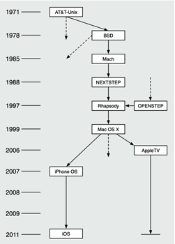
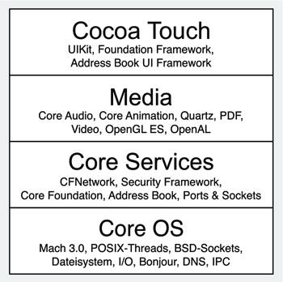
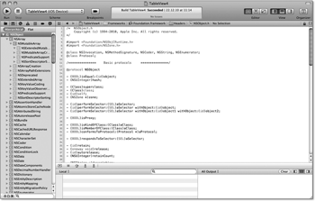

Zum Online-Shop
Zum Online-Shop»Also, wat is en Dampfmaschin? Da stelle mer uns janz dumm.«
– Lehrer Bömmel (aus dem Film »Die Feuerzangenbowle«)
1 Einführung
Das iPhone ist zwar keine Dampfmaschine, aber sein Erscheinen hat die Welt der Mobiltelefone ähnlich durcheinandergewirbelt wie die Dampfmaschine seinerzeit die konventionelle Produktion. Mobiltelefone gab es schon vor dem iPhone unübersichtlich viele. Smartphones, PDAs, MP3-Player und tragbare Computer ebenso. Aber ein tragbarer, handgroßer Computer mit eingebautem iPod und Telefon, auf dem ein Unix-basiertes Betriebssystem – das iOS – läuft, das hat erst das iPhone verwirklicht. Neben den vorstehend genannten Eigenschaften basiert es zudem auf objektorientierten Frameworks und als Entwicklungsumgebung steht mit Xcode ein seit Jahren bewährtes SDK zur Verfügung. Aber damit nicht genug. Der iPhone-Vorfahre iPod und das große Geschwister iPad hatten ähnliche fulminante Erfolge bei ihrer Markteinführung.
Zweifelsohne sind Apple mit dem iPod, dem iPhone und dem iPad mehrere große Würfe gelungen. Aber nicht nur die Geräte, sondern auch das damit verbundene Geschäftsmodell hat sich innerhalb kürzester Zeit einen veritablen Marktanteil sichern können. Der App Store, also der Online-Shop, in dem sich iOS-Benutzer mit Programmen (Apps) versorgen können, ist fest in den iTunes-Store integriert und kann darüber hinaus auch direkt vom iPhone aus angesprochen werden. Apple erlaubt das Hinzufügen von Programmen für Endkunden ausschließlich über den App-Store. Apple prüft jede App im Online-Store vor deren Veröffentlichung, um einen möglichst hohen Qualitätsstandard der Programme zu erreichen.
Leider sind die Bewertungskriterien von Apple für die Freigabe von Programmen nicht immer nachvollziehbar, auch wenn Apple in den letzten Monaten immer stärker versucht, das Verfahren transparenter zu gestalten. Dieses Konzept bewahrt zumindest den Benutzer vor der Entscheidung, Software aus nicht überprüfbaren Quellen zu installieren, wenngleich es auch keine Sicherheitsgarantie ist. Im Umkehrschluss bedeutet dies, dass ein Programmierer seine iOS-Programme ausschließlich über den App-Store in Umlauf bringen kann. Ausnahmen bestätigen aber auch hier die Regel, wie Abschnitt 1.4.5, »Der App Store«, zeigt.
2010 hat Apple mit dem iPad eine weitere Revolution in der IT eingeläutet. Das iPad ist ein Tablet-PC, auf dem ebenfalls iOS läuft und das sich in der Programmierung daher nicht vom iPhone unterscheidet. Das Einsatzgebiet des iPads ist ein anderes als das eines iPhones. Während sich das iPad durch sein großes Display als Laptop-Ersatz für Konsumenten etabliert, ist das iPhone das digitale Gegenstück zum Schweizer Taschenmesser – auch wenn es bislang noch keine Nagelscheren-App gibt. Und so unterscheiden sich viele iPhone- und iPad-Apps in ihrer grundsätzlichen Zielsetzung. Die Programmierung ist aber fast identisch, sodass dieses Buch sowohl die Programmierung des iPhone als auch die des iPad zeigt. Der Hauptunterschied bei der App-Erstellung besteht im Wesentlichen darin, die grafische Benutzungsschnittstelle für die jeweilige Gerätefamilie zu adaptieren. Die gleiche App sieht auf dem iPad in der Regel anders aus als auf dem iPhone.
Abschnitt 1.3, »iOS-Hardware«, beschreibt die verschiedenen Hardware-Plattformen, auf denen iOS läuft, und geht auf die Punkte ein, die ein Programmierer beim Erstellen von Apps für die verschiedenen Hardware-Typen beachten muss.

1.1 iOS
Das Betriebssystem von iPhone und iPad, das iOS, ist eine für beide Geräte angepasste Variante von Mac OS X. Mac OS X ist das Haus-Betriebssystem von Apple und läuft auf allen von Apple ausgelieferten Computern im Desktop- und Serverbereich. Die Wurzeln von OS X lassen sich bis zum ersten Unix, dem Ur-Unix V1 von AT&T, zurückverfolgen. Dieses Ur-Unix wurde 1971 u. a. von Dennis Ritchie und Ken Thompson entwickelt und bildet die Basis aller Unix-basierenden Betriebssysteme.
Unix V1 hat sich im Laufe der Zeit in unüberschaubar viele Derivate aufgeteilt. Eine wichtige Entwicklungslinie von Unix ist das BSD-Unix der Universität von Berkeley in Kalifornien. BSD – bitte nicht mit LSD aus dem gleichen Hause zu verwechseln – steht für Berkeley Software Distribution. Die erste Version von BSD ist im Jahr 1978 erschienen. 1985 wurde der Mach-Mikrokernel von BSD abgespalten. Dabei handelt es sich um einen der ersten Mikrokernel. Das ist ein Betriebssystemkern mit einem bewusst klein und übersichtlich gehaltenen Funktionsumfang. Zusätzliche Funktionalitäten werden über Treiber oder Module eingebunden.
Der Mach-Mikrokernel fristete ein akademisches Schattendasein, bis ein gewisser Steve Jobs, vormals Chef und Mit-Inhaber der Firma Apple, 1986 mit seiner Firma NeXT das Betriebssystem NEXTSTEP auf den Markt brachte. NEXTSTEP war nicht nur ein weiteres Betriebssystem, das einen Unix-Kern hatte, es war seiner Zeit weit voraus, da es komfortable Entwicklungswerkzeuge und gut strukturierte und leistungsfähige objektorientierte Frameworks mitbrachte.
Die von NeXT für die Programmierung unter NEXTSTEP verwendete Programmiersprache war Objective-C, eine objektorientierte Erweiterung von C. Objektorientierte Programmierung und objektorientierte Programmiersprachen waren zwar bereits seit Ende der 60er-Jahre bekannt. Allerdings konnte Objective-C wesentlich besser die elegante Schlankheit und Effizienz von C mit objektorientierten Konzepten verbinden als sein bekannterer Vetter C++.
NeXT wurde 1996 von Apple gekauft, und durch diese Transaktion kam Steve Jobs wieder an die Spitze von Apple. In der Folge wurde NEXTSTEP zur Basis des neuen Apple-Betriebssystems Mac OS X. Zunächst entwickelte die Firma Sun 1996 aus NEXTSTEP OPENSTEP, und aus OPENSTEP 4.2 und NEXTSTEP 3.3 entwickelte Apple 1997 die erste Version von Mac OS X. Sie hieß damals noch Rhapsody, und Apple hat sie zu Mac OS X Server 1.0 weiterentwickelt und 1999 veröffentlicht.
Der Unterbau von Mac OS X ist seit Beginn das Betriebssystem Darwin, das Apple 1999 in der Version 0.1 unter der Apple Public Source Licence (APSL) als Open-Source freigegeben hat. Gemeinsam mit Mac OS X wird Darwin von Apple weiterentwickelt und zur freien Verfügung veröffentlicht. Im Gegensatz zu Darwin ist Mac OS X nicht quelloffen. Das, was Mac OS X zum Benutzer hin ausmacht, beispielsweise die Aqua-Oberfläche, ist nicht Bestandteil von Darwin und damit auch keine Open-Source-Software.
2006 hat Apple erstmals einen neuen Entwicklungszweig von Mac OS X abgespalten. Dieser Zweig ist das Betriebssystem AppleTV 1.0, das auf den AppleTV-Boxen läuft. [1](In der 2010 vorgestellten zweiten Version der AppleTV-Box hat Apple das AppleTV durch iOS ersetzt.) 2007 eröffnete Apple eine weitere Entwicklungslinie von Mac OS X, das iPhone OS. Dieses stammt also direkt von Mac OS X ab, weist daher alle nennenswerten Eigenschaften von Mac OS X auf und ist speziell auf die Gegebenheiten des iPhone angepasst.
Mit dem Versionssprung von 3.2 auf 4.0 hat Apple den Namen des iPhone OS geändert – ab 4.0 trägt es den Namen iOS. Damit hat Apple den Namen des Betriebssystems für die Verwendung auf weiteren Geräten (iPad und AppleTV) angepasst. Den Markennamen kaufte Apple der Firma Cisco ab, deren Netzwerkkomponenten ebenfalls ein Betriebssystem namens IOS (Internetworking Operating System) verwenden. Da es sich dabei aber nur um eine Umbenennung des bereits vorhandenen iPhone OS gehandelt hat, stellt das iOS keine neue Entwicklungslinie dar.
Abbildung 1.1 Vom Ur-Unix zum iOS
Neben den Frameworks sind aber auch die wichtigsten Entwicklerwerkzeuge selber Weiterentwicklungen der bereits unter NEXTSTEP vorhandenen Werkzeuge. Der mittlerweile mit Xcode verschmolzene Interface Builder war bereits unter NEXTSTEP verfügbar. Die Entwicklungsumgebung Project Builder entwickelte Apple im Laufe der Zeit zu Xcode weiter, was das zentrale Werkzeug zur Programmierung für Mac OS X und iOS ist. Das Cocoa-Framework, die zentrale Schnittstelle für Programmierer, wurde für das iOS den speziellen Anforderungen an die iPhone-Programmierung angepasst und heißt dort Cocoa Touch.
Abbildung 1.1 zeigt eine grafische Übersicht der Entwicklung von Unix aus dem Ur-Unix von AT&T bis hin zum iOS.
1.1.1 Core OS
iOS ist in vier Schichten aufgeteilt (siehe Abbildung 1.2). Auf der untersten Schicht, dem Core OS, residieren der Mach-Kernel und grundlegende Funktionen wie POSIX-Threads, BSD-Sockets, Interprozesskommunikation, Dateisystemzugriffe, die Standard-Bibliothek von iOS (LibSystem), Treiber, etc. Diese Schicht beherbergt auch die Netzwerkdienste Bonjour und DNS, was deren integralen Charakter innerhalb von Mac OS X beziehungsweise iOS zeigt. Sie sind keine gekapselten Abbildungen von BSD-Sockets, sondern direkt in das Betriebssystem integriert.
Die über Core OS angesiedelten, höher liegenden Schichten kapseln die Funktionalitäten, so dass ein Programmierer, der beispielsweise in seinem Programm Threads oder Sockets verwenden möchte, nicht direkt mit POSIX-Threads und BSD-Sockets arbeiten muss. Stattdessen kann er Abstraktionen dieser Funktionalitäten in den höheren Ebenen verwenden. Es ist zwar durchaus möglich, direkt gegen die LibSystem zu programmieren, allerdings sollte es dafür gute Gründe geben. Die höheren Schichten bieten komfortable Abstraktionen aller benötigten Funktionen und kümmern sich um Dinge wie beispielsweise das Speicher- und Ressourcenmanagement. Das erleichtert einem Programmierer das Leben, denn in der Regel hat dieser weder Zeit noch Geld, um sich neben dem Umsetzen der Anforderungen der eigentlichen Applikation auch noch mit Grundsätzlichem wie der Speicherverwaltung des Betriebssystems zu beschäftigen.
1.1.2 Core Services
In der Schicht über dem Core OS befinden sich die Core Services. Diese bestehen aus den Frameworks Core Foundation, CFNetwork, Core Location, Security Framework, der direkten Unterstützung von XML, dem Address Book Framework und der in iOS integrierten Datenbank SQLite. Die Core Services sind Grundlage aller Dienste und Anwendungen, die auf dem iPhone laufen.
Core Foundation bietet den darüber liegenden Schichten grundlegende Operationen und Funktionen wie Zeichenkettenverwaltung, Bundles, Datum und Uhrzeit, Threads, Ports und Sockets. Core Foundation ist ein in C implementiertes Framework, auf das man als Programmierer für das iOS selten direkt zugreift. Das primäre Framework für die Programmierung unter iOS ist Cocoa Touch, das in Objective-C implementierte Schnittstellen zu den Funktionen der unteren Schichten des Betriebssystems bietet. CFNetwork ist ein ebenfalls in C implementiertes Framework, das die Netzwerkfunktionen (BSD-Sockets) des Core OS kapselt.
Core Location bietet die Schnittstellen zur Positionsbestimmung von iPhone und iPad. Das iPhone hat zwar seit dem 3G-Modell ein GPS-Modul eingebaut, die Positionsbestimmung erfolgt in der Regel aber nicht per GPS, da das GPS-Modul zum einen (auf Mobilgeräten) teuren Strom verbraucht und zum anderen in überdachten oder dicht bebauten Gebieten nicht oder nur sehr ungenau funktioniert. Daher nutzt iOS für die Positionsbestimmung neben GPS auch noch aGPS und WPS. Bei aGPS wird die aktuelle Position aus einer Kombination von Triangulierung der erreichbaren Mobilfunkmasten und GPS ermittelt, und WPS bestimmt die Position durch einen Abgleich der erreichbaren WLAN-Netzwerke mit einer entsprechenden Datenbank.
Abbildung 1.2 Die vier Schichten des iOS
Das Security Framework bietet Möglichkeiten zum Umgang mit Zertifikaten, Schlüsseln und Zufallszahlen. Es stellt einen Ersatz für die unter Unix weitverbreitete OpenSSL-Bibliothek dar, die unter iOS nicht vorhanden ist. Neben dem XML-Handling ist das Address Book Framework ein weiterer, wichtiger Bestandteil von Core Services. Das iPhone ist in erster Linie ein Telefon, und dementsprechend wichtig ist der Umgang mit Kontakten und Adressdaten, die das Address Book Framework kapselt. Außerdem enthält Cocoa Touch dafür in Objective-C implementierte Schnittstellen, die den Zugriff auf die Adressdaten noch vereinfachen.
1.1.3 Media
Die dritte Schicht von iOS, der Media-Layer, beinhaltet alle Multimediafunktionen, die iPhone und iPad bieten. Dies sind für die Grafik Quartz zur 2D-Darstellung, OpenGL ES für 2D- und 3D-Darstellungen sowie Core Animation zum Rendern von Bewegungen und Animationen. Für die Verarbeitung von Audiodaten stellt der Media-Layer Core Audio zur Verfügung. Darüber hinaus unterstützt iOS den plattformübergreifenden Standard OpenAL, was das plattformübergreifende Programmieren von Audio-Funktionen erheblich vereinfacht. Das Media Player Framework dient zur Wiedergabe von Audio- und Video-Daten. Es enthält eine Implementierung des Video-Codecs H.264/MPEG-4. Dieser Codec ist seit Mac OS X 10.4 der Kompressionsstandard für Videodaten durch Quicktime, und beispielsweise verwendet iChat ihn für Videokonferenzen.
1.1.4 Cocoa Touch
Die vierte iOS-Schicht ist Cocoa Touch. Es ist die Grundlage aller Programme mit grafischer Benutzungsoberfläche unter iOS und der mobile Bruder von Cocoa, der obersten Schicht von Mac OS X. Wie Cocoa bietet auch Cocoa Touch umfangreiche Möglichkeiten zur Programmierung grafischer und eventgesteuerter Programme. Dazu bringt es Klassen für die Erstellung grafischer Benutzeroberflächen und die Fähigkeit zum Event Handling mit. Der größte Unterschied zum Bruder auf dem Mac ist die vollkommen andere Benutzerschnittstelle von iPhone und iPad. Während auf einem Mac der Benutzer in der Regel über Tastatur und Maus mit den Programmen kommuniziert, geschieht das auf dem iPhone über das Multitouch-Display und die Bewegungssensoren. Auf dem Display führt der Benutzer mit einem oder mehreren Fingern Gesten aus, die das iOS an das jeweils aktive Programm weiterreicht. Außerdem können die Programme die Bewegungen des Geräts (z. B. Kippen, Schütteln) als Eingaben des Nutzers interpretieren. Cocoa Touch ist speziell an diese Benutzerschnittstelle angepasst und bietet dem Programmierer genau darauf abgestimmte Eingabeelemente und Events.
Cocoa Touch besteht seinerseits aus sechs einzelnen Frameworks. Das wichtigste für die Programmierung eigener Applikationen ist das UIKit. Es stellt die grundlegenden Klassen für das Erstellen von grafischen, eventgesteuerten Benutzeroberflächen zur Verfügung. Dazu bringt es eine große Anzahl fertiger Elemente mit, die ein Programmierer für eine App nur noch zu einer eigenen Benutzeroberfläche zusammenbauen und mit Applikationslogik versehen muss. Textfelder, Buttons, Tabellen, Copy & Paste, grafische Elemente etc. sind alles Bestandteile des UIKits, auf die ein Programmierer direkt zurückgreifen kann. Das Event-Handling findet ebenfalls über das UIKit statt. Es bietet darüber hinaus einen gekapselten Zugriff auf die Hardware des iPhone, also auf Systeminformationen, Kamera und die Beschleunigungs- und Neigungssensoren. Falls Sie bereits unter Mac OS X mit Cocoa gearbeitet haben, kennen Sie das AppKit, das das Pendant zum UIKit ist.
Mit iOS 3.0 hat Apple mit dem Game Kit den sogenannten Peer-to-Peer-Modus eingeführt, über den Verbindungen zwischen iOS-Geräten und damit z. B. Netzwerkspiele zwischen iOS-Geräten möglich sind. Game Kit ist ebenfalls ein Bestandteil von Cocoa Touch.
Den Zugriff auf die Kartenfunktionen von iOS ermöglicht seit iPhone OS 3.0 das Map Kit. Damit können Sie Landkarten mit Positionsbestimmung in eigene Programme einbauen. Diese Möglichkeit entspricht dem klassischen Web-2.0-Mashup, das Google Maps verwendet, um geografische Informationen zu visualisieren.
Das Message UI Framework erlaubt die Anzeige eines E-Mail-Formulars, sodass man aus eigenen Programmen heraus E-Mails erstellen und versenden kann. Die Foto-Applikation des iPhone oder Safari verwendet dieses Formular, wenn Sie ein Foto beziehungsweise eine URL direkt aus diesen Programmen heraus versenden.
Abbildung 1.3 Die Klassenhierarchie des Foundation Framework
Cocoa Touch ähnelt in vielen Bereichen Cocoa, das wiederum von NEXTSTEP abstammt. Cocoa Touch ist wie Cocoa durchgängig objektorientiert, und die Mutter aller Klassen von Cocoa Touch ist NSObject, die das Foundation Framework enthält. Auch fast alle anderen Klassen innerhalb dieses Frameworks sind Unterklassen von NSObject. Die Übersicht der Klassenhierarchie, das ist die linke Spalte in Abbildung 1.3, spiegelt dies wider.
Ihr Kommentar
Wie hat Ihnen das <openbook> gefallen? Wir freuen uns immer über Ihre freundlichen und kritischen Rückmeldungen.


{kind=link}
{kind=link}
{kind=link}